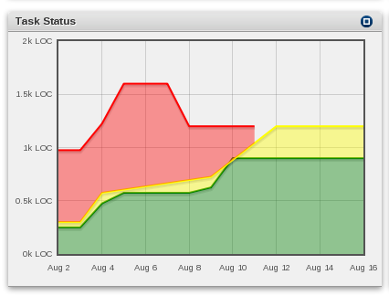

View progress
|  The portlet displays the progress of the status of the tasks. The colors are the same as in Overview. The x-axis displays a time span, the y-axis displays LOC (lines of code). The lines can be actived on certain points which will trigger the Overview to be filtered by status. The Task Status also depends on the Filter chosen in the Overview portlet. |